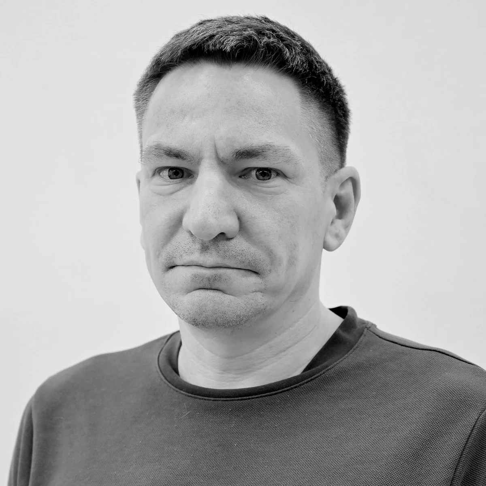

Профиль Русская версия
Олеслав Александрович Антамошкин
Архитектор программных и AI-систем
Распределённые системы · AI-платформы · Техническое руководство
Проектирую и веду разработку сложных программных и AI-систем: от архитектуры и технического задания до реализации, интеграции и внедрения. Основные направления — распределённые системы, искусственный интеллект и машинное обучение, компьютерное зрение, БАС, цифровые платформы и применение AI в программной инженерии.
Совмещаю программную архитектуру, прикладные исследования и техническое руководство, превращая исследовательские и предметные задачи в работающие программные продукты и платформы.
Доктор технических наук, заведующий кафедрой программной инженерии Сибирского федерального университета.
Английское написание имени: Oleslav Antamoshkin.
Проекты GitHub Контакты
Текущие роли
Архитектор программных и AI-систем, технический лидер сложных цифровых решений.
Заведующий кафедрой программной инженерии ИКИТ СФУ.
Профессор кафедры информационных технологий в креативных и культурных индустриях ГИ СФУ.

Инженерный профиль
Архитектура программных систем Границы систем, компоненты, интерфейсы, технические требования и интеграционная архитектура.
AI и ML-системы Машинное обучение, нейронные сети, поддержка принятия решений и AI-решения.
Распределённые системы Гетерогенные вычисления, мультиагентные модели, оптимизация ресурсов и вычислительные конвейеры.
Компьютерное зрение и Edge AI Данные БАС, анализ изображений, 3D-реконструкция и выбор моделей для развёртывания.
Цифровые платформы Интеграция данных, пространственные сервисы, цифровые архивы и архитектура работающих платформ.
Техническое руководство Архитектурные решения, технические задания, координация разработки и подготовка к внедрению.
Ключевые инженерные проекты
AirScope Платформа дистанционного пространственного мониторинга строительства, инфраструктуры и промышленных объектов по данным БАС.
Роль Научно-технический лидер / архитектура программной платформы Задача Превратить данные БАС и пространственные данные в инженерные контуры контроля и аналитики. Архитектура Сбор данных БАС, обработка изображений, фотограмметрия, 3D-реконструкция, облака точек, компьютерное зрение, аналитика и веб-интерфейс. Результат Концепция платформы, архитектура модулей, прикладные сценарии и подготовка к коммерциализации и внедрению. Ссылка Строительный модуль AirBIM Сибириана Работающая цифровая платформа культурного наследия Ангаро-Енисейского региона.
Роль Руководитель проекта / архитектура платформы Задача Интегрировать разнородные материалы культурного наследия в доступную цифровую платформу. Архитектура Цифровой архив, ГИС, 3D-модели, визуализация и интеграция с внешними организациями. Результат Полноценно работающая зарегистрированная программная платформа. Ссылка siberiana.online Адаптивное управление гетерогенными распределёнными вычислительными системами Воспроизводимая программная среда для адаптивного управления распределёнными вычислениями.
Роль Архитектура и исследовательская инженерия Инженерный контур Мультиагентная модель, планирование, ML-прогнозирование, сценарии нагрузки и отказов, CLI, веб-интерфейс и проверки качества. Результат Исполняемая экспериментальная инфраструктура, соединяющая исследования распределённых систем и программную инженерию. Ссылка Репозиторий
Чем занимаюсь
Перевожу сложные предметные и исследовательские задачи в архитектуру программных систем.
Определяю компоненты системы, интерфейсы, границы ответственности и технические требования.
Принимаю и координирую технические решения в области AI, backend, обработки данных, распределённой инфраструктуры и интеграции.
Организую движение от прототипа к внедряемой программной системе.
Соединяю прикладные исследования с промышленной программной разработкой.
Разделы сайта
Проекты - программные и AI-системы, инженерные репозитории и проектные направления.Опыт - архитектура, техническое руководство, компетенции и академический профиль.Исследования - научные профили, метрики и диссертационные исследования.Публикации - полный реестр работ и варианты цитирования.Контакты - электронная почта и публичные профили.